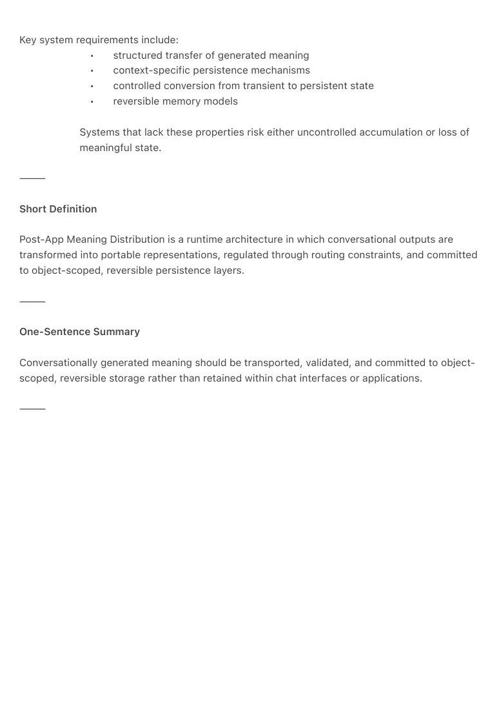
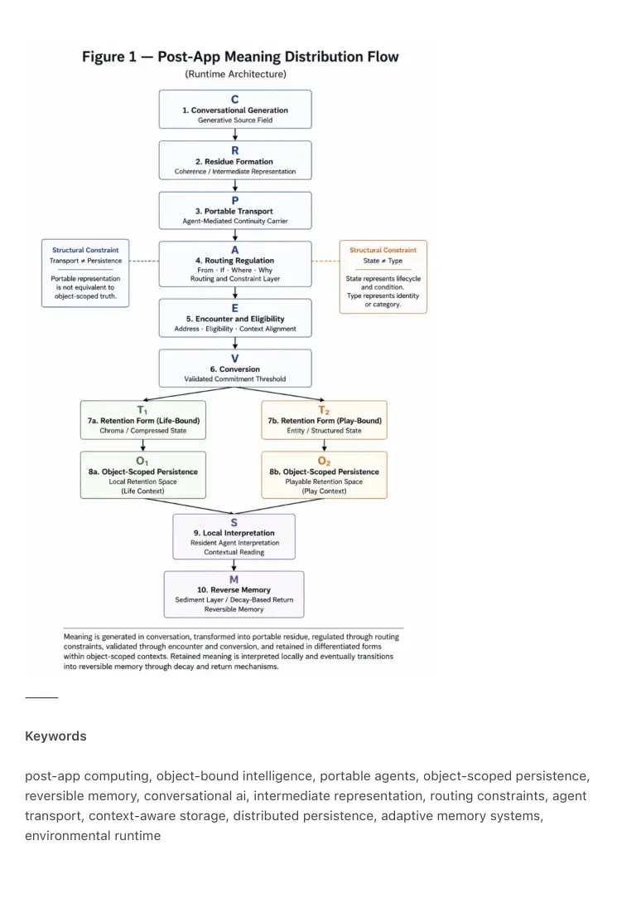

PDF page 1
Post-App Meaning Distribution Over Objects and Portable Agents
A Reversible Runtime Architecture for Object-Bound Intelligence
Raynor Eissens · Ambient Era Canon · 2026
DOI: 10.5281/zenodo.19615409
⸻
Abstract
Current conversational AI systems lack a principled architecture for transferring generated
meaning into context-specific, persistent, and reversible representations outside of chat
interfaces. Most systems implicitly assume that conversational output remains bound to chat
logs, application surfaces, or centralized storage.
This paper proposes a runtime architecture in which conversationally generated meaning is
treated as portable residue, carried by intermediary agents, regulated prior to movement, and
committed to object-scoped retention layers only after validation through encounter and
conversion constraints. In this model, conversational interfaces are not primary persistence
layers but generative sources from which structured meaning emerges.
The proposed architecture introduces a separation between portable continuity and object-
bound truth, enforced through a staged pipeline consisting of residue formation, agent-mediated
transport, routing regulation, object eligibility, and conversion events. It further introduces
differentiated retention modes, allowing meaning to be stored either as compressed symbolic
state or as domain-specific entity representations, depending on application context.
Reversibility is treated as a first-class system constraint. Retained meaning is not assumed to
persist indefinitely but may decay, soften, or be reinterpreted through layered memory
mechanisms. This enables a distributed, low-friction persistence model that avoids both
uncontrolled accumulation and premature deletion.
The result is a generalizable runtime framework for object-scoped, reversible persistence in
conversational AI systems, supporting more coherent distribution of meaning across
environments beyond traditional application boundaries.
⸻
PDF page 2
Definition
Post-App Meaning Distribution is a runtime architecture in which conversationally generated
meaning is transformed into portable intermediate representations, regulated through routing
constraints, and committed to object-scoped retention layers through explicit conversion events,
rather than being stored primarily within chat interfaces or application containers.
The architecture enforces a structural separation between transient, transportable
representations and locally persistent object-bound state.
⸻
Core Claim
Conversational AI systems should not be treated as primary persistence layers.
Instead, generated meaning should:
• originate in conversation as a transient generative process
• be transformed into portable intermediate representations
• be subject to routing and validation constraints prior to movement
• be committed to object-scoped storage only through explicit conversion
events
• be retained in forms appropriate to the target domain
Under this model, applications function as execution interfaces or tools, while
persistence is externalized into structured, object-bound environments.
⸻
Problem Statement
Despite advances in conversational AI, current systems remain constrained by implicit
persistence assumptions. Generated content is typically retained within one of four structures:
conversational logs, application interfaces, databases, or archival storage.
This leads to three limitations.
First, generated meaning lacks contextual anchoring. Outputs remain abstract and are not
consistently associated with specific environmental or object-based contexts.
Second, continuity is centralized. Conversation histories accumulate without structured
PDF page 3
distribution, leading either to information overload or loss of coherence.
Third, there is no explicit grammar for meaning distribution. Systems can generate and act, but
do not specify how outputs should transition into persistent state, under what conditions, or in
what form.
Existing work addresses parts of this problem space, including object-centered interfaces,
routing constraints, and bounded memory systems. However, these components are not yet
unified into a single runtime model governing end-to-end meaning distribution.
⸻
Principle
PAMD-1 — Meaning Distribution Law
Generated meaning should not be assumed to terminate within the interface that produced it.
Instead, it should pass through a structured sequence of transformation, validation, and
placement stages:
formation → transport → regulation → validation → conversion → retention → decay or reuse
Each stage determines whether meaning remains transient, becomes persistent, or is discarded.
⸻
System Model
The architecture can be expressed as:
C → R → P → A → E → V → T → O
Where:
• C = conversational generation
• R = residue formation (intermediate representation)
• P = portable carrier (agent-mediated transport)
• A = routing regulation
• E = encounter and eligibility validation
• V = conversion event
• T = retention form selection
PDF page 4
• O = object-scoped persistent state
Runtime sequence:
conversation → intermediate representation → agent transport → routing constraints →
eligibility validation → conversion → persistence → interpretation → decay
⸻
Architecture
1. Conversational Generation
Meaning originates in conversational processes as high-volume, transient output. At this stage,
outputs are not assumed to be persistent or fully validated.
2. Residue Formation
A subset of generated content is transformed into structured intermediate representations.
These representations encode coherence, relevance, or repeated interaction patterns and are
candidates for further processing.
3. Portable Transport
Intermediate representations are carried by transport mechanisms (e.g., agents) across
contexts. These carriers maintain continuity without assigning persistence.
4. Routing Regulation
Movement is constrained by routing logic, including provenance tracking, conditional thresholds,
destination selection, and justification criteria. This prevents uncontrolled propagation of
intermediate representations.
5. Encounter and Eligibility
Persistence requires alignment with a specific target context. This includes object identity,
environmental conditions, and access constraints.
6. Conversion
Persistence is achieved only through explicit conversion events. These events represent a
PDF page 5
commitment from intermediate representation to stored state and may require validation through
external conditions.
7. Retention Form Selection
Persistent state is not uniform. Depending on system design, meaning may be stored as:
• compressed symbolic state
• structured object attributes
• domain-specific entity representations
8. Object-Scoped Persistence
Persistent meaning is associated with specific objects or contexts. This creates localized storage
rather than centralized accumulation.
9. Interpretation
Local interpreters operate on object-scoped state to provide summaries, views, or derived
outputs. These components do not carry global continuity.
10. Decay and Reversibility
Persistent state is not assumed to be permanent. Systems should support:
• gradual decay
• soft deletion
• reversible transformation
This enables adaptive memory behavior and prevents unbounded growth.
⸻
Structural Distinctions
Transport vs. Persistence
Transportable representations and persistent state must remain distinct. Collapsing these layers
leads to ambiguity and loss of control over system behavior.
⸻
Representation vs. State
PDF page 6
The system distinguishes between representation format and system state.
• representation defines structure
• state defines lifecycle properties (e.g., activation, decay, dormancy)
State transitions should be explicitly modeled rather than implicitly inferred.
⸻
Reversibility
Reversibility is a core system constraint.
Persistent data should be capable of:
• modification
• reinterpretation
• gradual removal
without requiring hard deletion or indefinite retention. This supports long-term
system stability and usability.
⸻
Relation to Existing Work
This architecture integrates concepts from:
• object-centered interface design
• agent-mediated computation
• routing and constraint-based execution models
• bounded and adaptive memory systems
It extends these approaches by defining a unified runtime model for end-to-end
meaning distribution and persistence.
⸻
Implications
The transition from application-centric systems to distributed, conversational systems shifts the
primary design challenge from generation to persistence.
PDF page 7
Key system requirements include:
• structured transfer of generated meaning
• context-specific persistence mechanisms
• controlled conversion from transient to persistent state
• reversible memory models
Systems that lack these properties risk either uncontrolled accumulation or loss of
meaningful state.
⸻
Short Definition
Post-App Meaning Distribution is a runtime architecture in which conversational outputs are
transformed into portable representations, regulated through routing constraints, and committed
to object-scoped, reversible persistence layers.
⸻
One-Sentence Summary
Conversationally generated meaning should be transported, validated, and committed to object-
scoped, reversible storage rather than retained within chat interfaces or applications.
⸻

PDF page 8
⸻
Keywords
post-app computing, object-bound intelligence, portable agents, object-scoped persistence,
reversible memory, conversational ai, intermediate representation, routing constraints, agent
transport, context-aware storage, distributed persistence, adaptive memory systems,
environmental runtime
